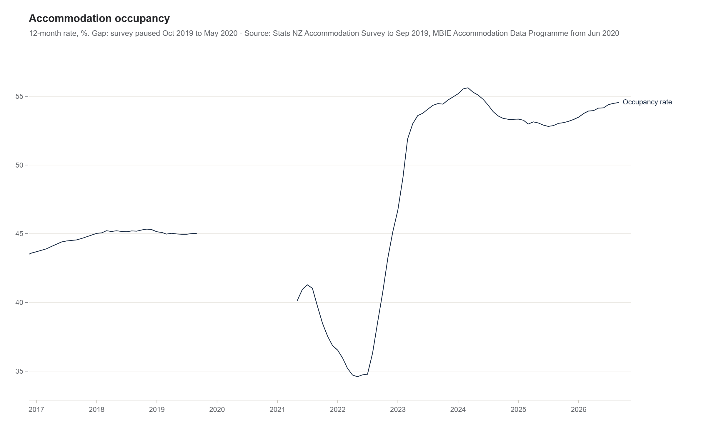
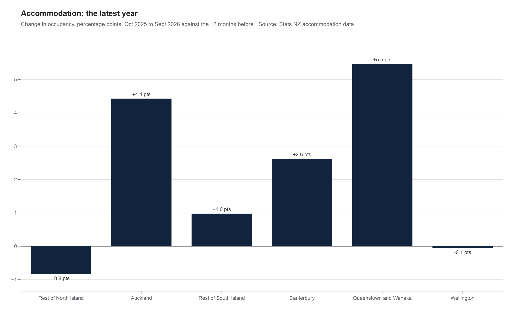
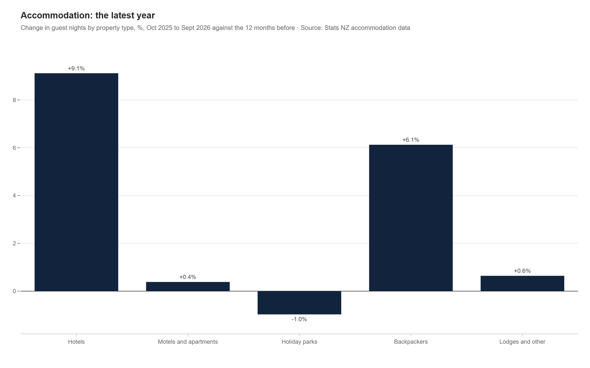
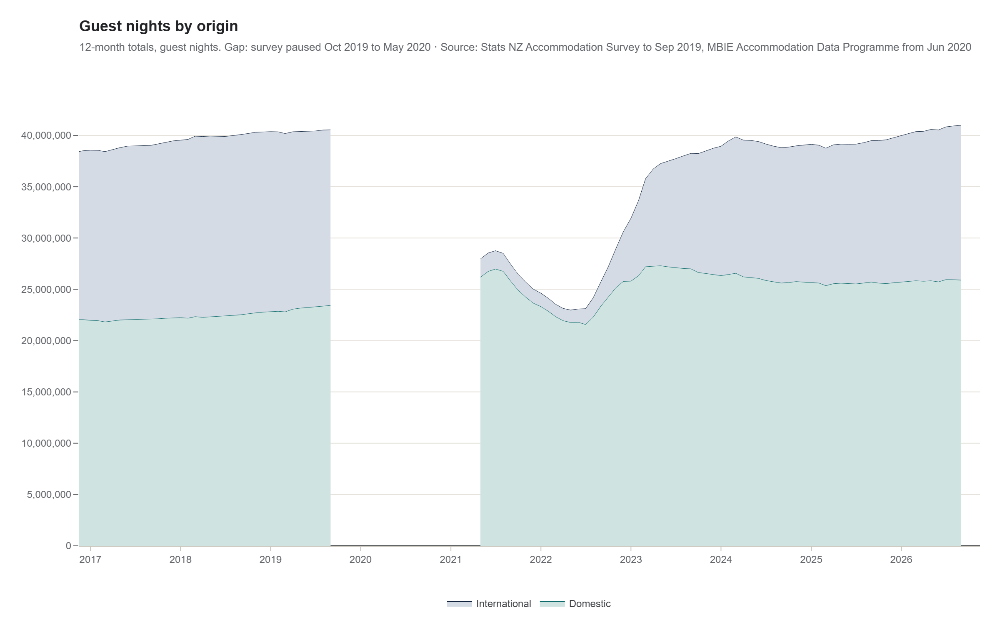

A bumpy ride for New Zealand accommodation
The tough economy of 2024–25 shows up clearly in the accommodation data, and the recovery is uneven.
It's been a bumpy ride for New Zealand accommodation. The tough economy of 2024–25 shows up clearly: 12-month occupancy fell from 55.6% in March 2024 to 52.9% in mid-2025, and has only partly recovered.

That weakness was almost entirely domestic. Domestic guest nights fell by about a million a year, while international nights kept growing. The recovery is uneven too. Auckland and Queenstown are pulling ahead while the rest of the country struggles.


Then there's the longer view. Compared with 2019, domestic nights are up 11% and international nights are down 12%. Either something big has shifted, or the measurement has. MBIE's Accommodation Data Programme replaced Stats NZ's survey in 2020, and MBIE is clear the two aren't directly comparable: they cover different properties, measure capacity differently and define accommodation types differently.

That frustrates me. Data like this is exceptionally useful, and I find myself second-guessing whether it's telling me the right answer.
Explore the accommodation data
Sources: MBIE Accommodation Data Programme (from June 2020); Stats NZ Accommodation Survey (to September 2019). Guest nights count one person staying one night.